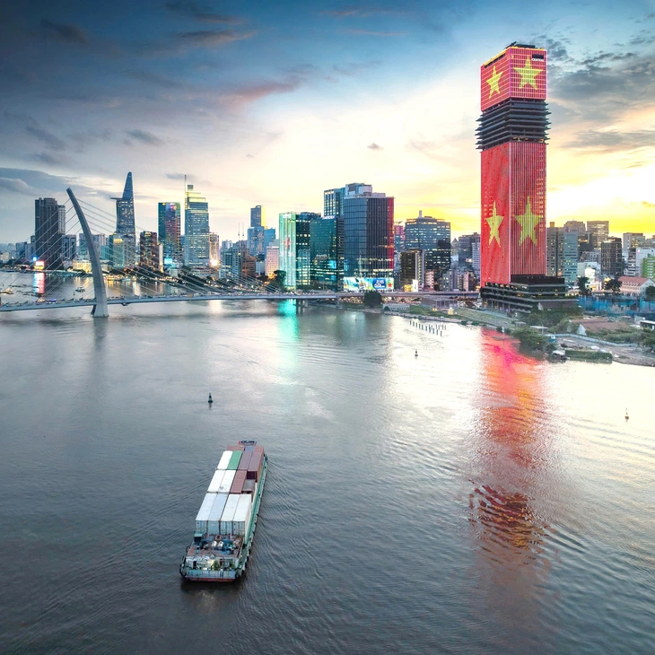

Ủy ban Thường vụ Quốc hội vừa cho ý kiến và thống nhất trình Quốc hội thông qua dự án nghị quyết của Quốc hội sửa đổi, bổ sung một số điều nghị quyết số 98 về thí điểm một số cơ chế, chính sách đặc thù phát triển TP.HCM tại kỳ họp thứ 10 Quốc hội khóa XV.
Mục tiêu nghị quyết nhằm tiếp tục hoàn thiện cơ sở pháp lý, đảm bảo cơ chế, chính sách đặc thù, vượt trội, khả thi, hiệu quả hơn, đáp ứng yêu cầu cấp thiết trong thu hút nhà đầu tư chiến lược, huy động nguồn lực trong và ngoài nước cho đầu tư phát triển TP.HCM sau hợp nhất.
Quan trọng hơn là khắc phục những khó khăn, vướng mắc, bất cập phát sinh trong quá trình thi hành nghị quyết 98 để xây dựng, phát triển TP.HCM trở thành siêu đô thị lớn nhất tại Đông Nam Á với vị trí, vai trò là đầu tàu dẫn dắt, hạt nhân, động lực tăng trưởng của vùng Đông Nam Bộ và Tây Nam Bộ.

TP.HCM đang xây dựng Trung tâm tài chính quốc tế, cần phải có những cơ chế để thích nghi với những không gian mới